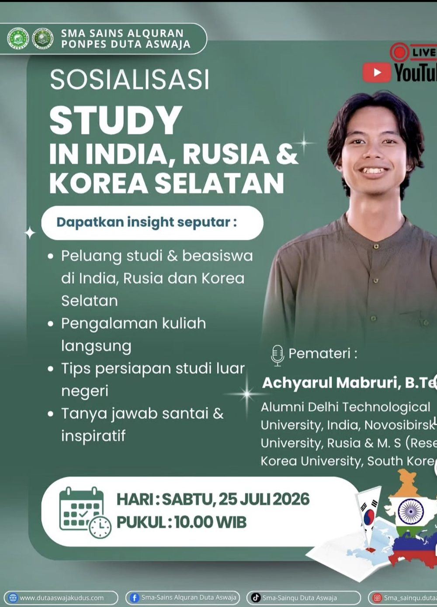
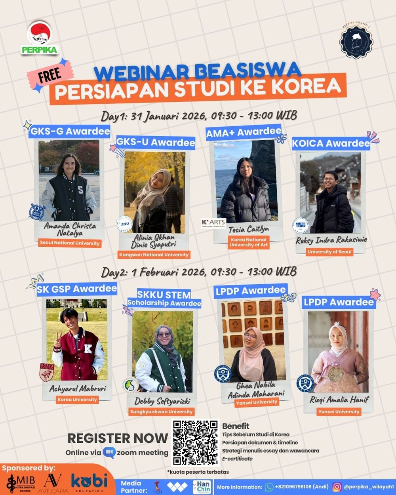
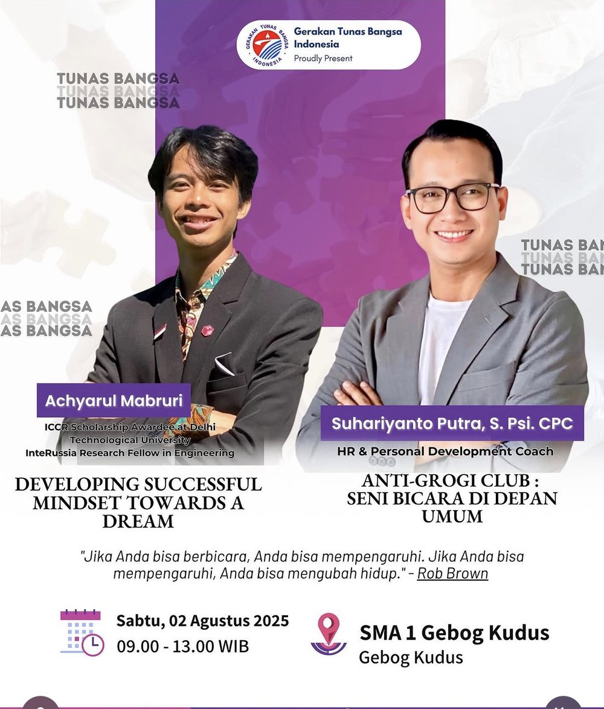
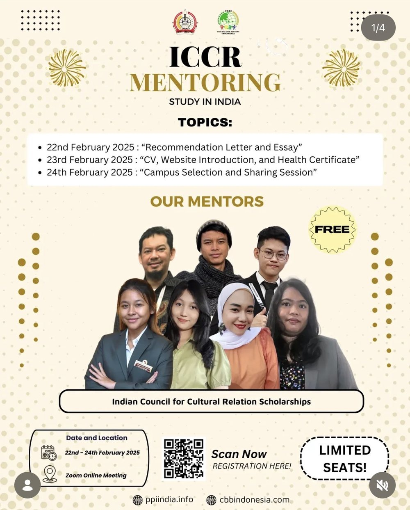
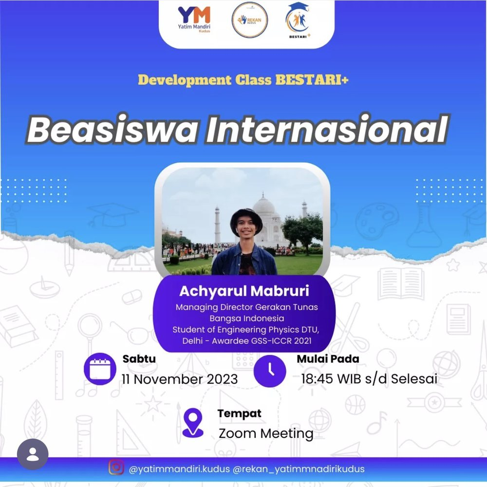
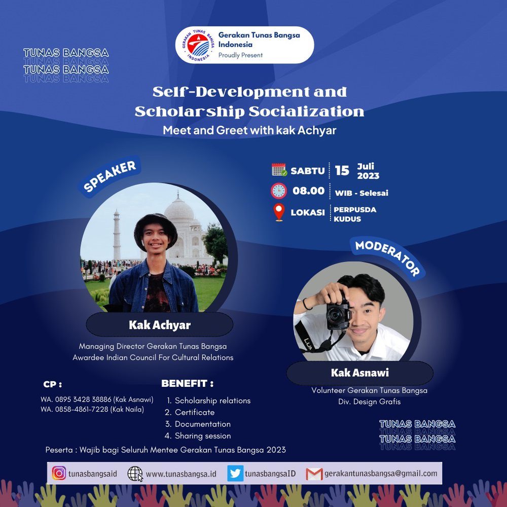
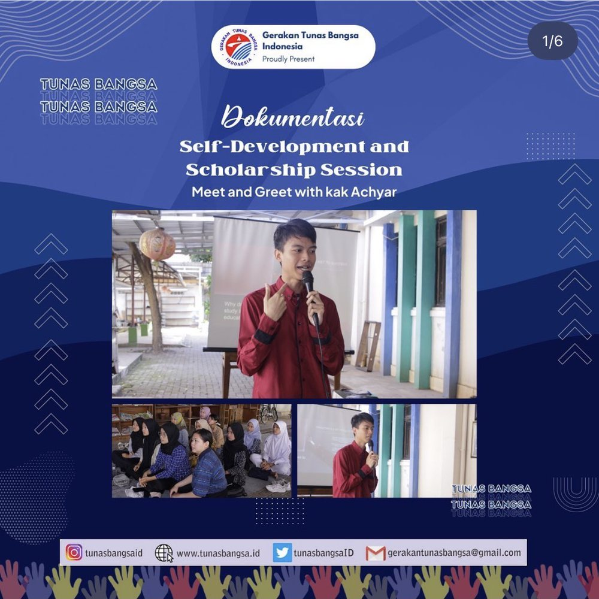
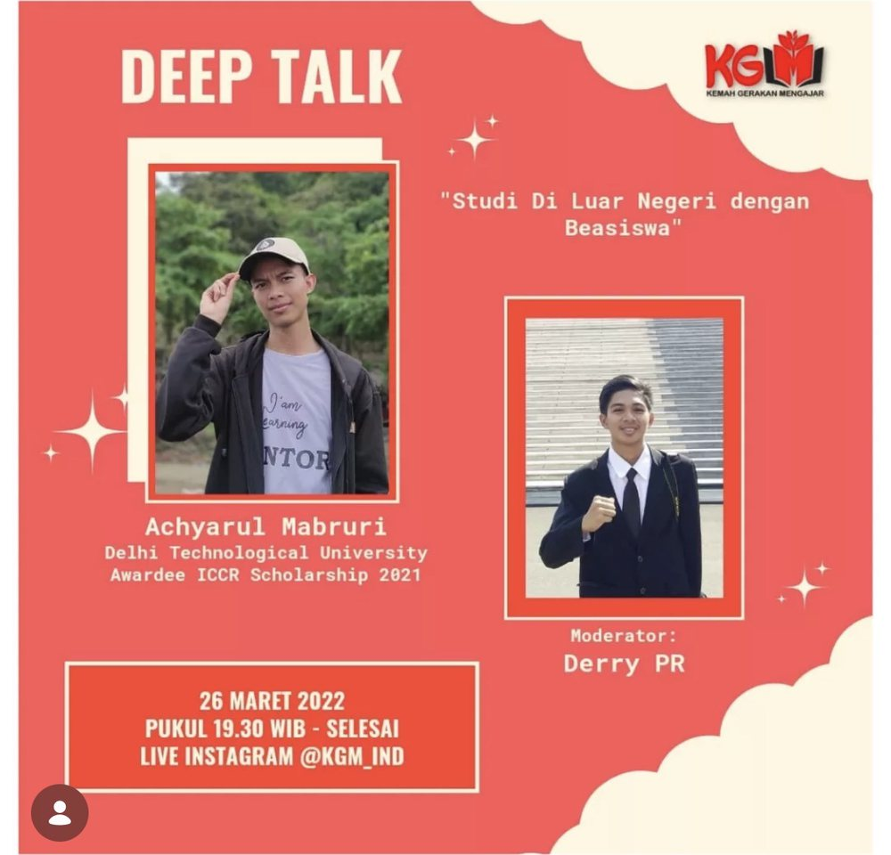

Leadership, youth and soft-skill development
Research is half of my story. The other half is people: building young Indonesians' leadership and soft skills, mentoring, and opening doors to education.
Managing Director
- Led and managed the NGO's day-to-day operations, programmes and volunteer team.
- Formulated and set the organisation's policies and core values.
- Coordinated internal and external stakeholders to keep the movement active and sustainable.
- Supervised mentoring, coaching and scholarship-awareness activities reaching 100+ young people.
Human Quality & Development Lead
- Standardised member development and evaluated each mentee's progress.
- Launched English classes, coaching, sharing sessions, webinars and workshops for 100+ mentees.
Speaker and mentor
Invited speaker at schools, universities and community events; ICCR scholarship mentoring for about 100 participants with the Indonesian Students Association in India.
Board of Supervisors
Supervised the association's programmes and governance for Indonesian students across India.
Asia Region Representative
Represented international students from the Asia region in the society's Chamber of Representatives.
Member, DEPTH
Engineering Physics technical community at DTU.
Study & Research Department
Supported study and research activities for Indonesian students in India.
Internal and People Development
Collaborated on and implemented leadership development for young people and the wider community.
Educational Coordinator, volunteer
- Social activities and volunteering with communities in North Lombok.
- Coordinated teaching for students and young people: clean and healthy living, trauma healing, English for tourism, art classes and motivation sessions.
Participant, Kemah Gerakan Mengajar (KGM) 2018
One of 40 participants selected from 447 applicants for a three-day camp on community-driven education. Participant announcement · My reflection

100+ young people mentored
English classes, coaching, scholarship guidance and workshops in Indonesia, and I still mentor when invited.
Sharing the path with others
Talks and mentoring sessions on scholarships, studying abroad and personal growth. Click a poster to view it full size. Open to invitations for talks, mentoring sessions and youth-leadership programmes.








Let's build something together.
Open to research collaborations, fully funded PhD positions and R&D roles, especially in emerging memory devices, nanoelectronics and neuromorphic hardware, and always happy to support youth leadership, mentoring and soft-skill development.